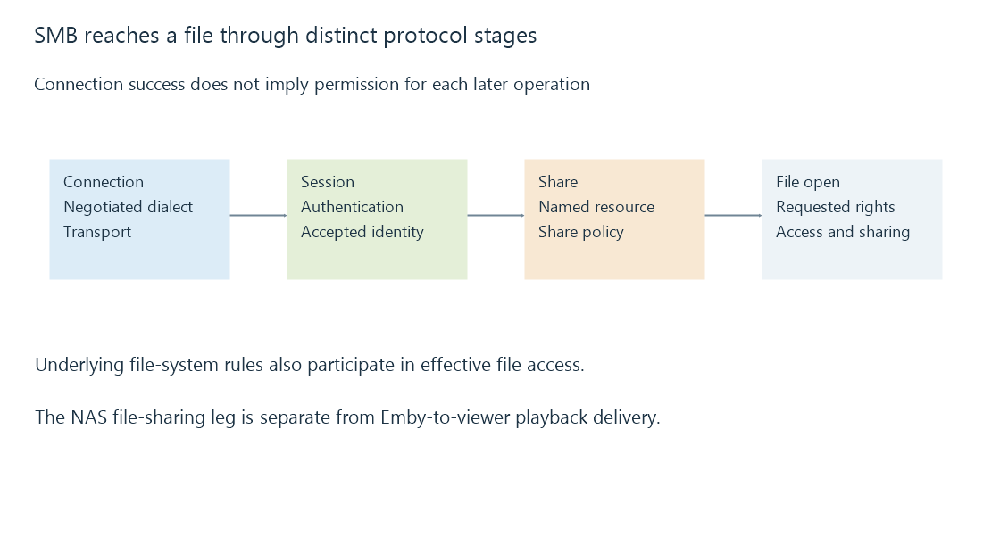

SMB file shares: sessions, shares and file operations
SMB serves network file operations through authenticated sessions and named shares, with access and caching rules distinct from Emby playback delivery.
SMB is a protocol for accessing files and other shared resources on another computer. A Windows path such as \\nas.example.test\Media\Film.mkv commonly reaches an SMB share.
If Emby Server uses that path as a media source, it acts as a file-sharing client. The NAS or file server performs the remote file operations. Emby then supplies playback through its own connection to the viewer.
Connection, session, share, file
The client and server negotiate a supported SMB dialect. The client establishes an authenticated session, connects to a named share and opens a file with requested access and sharing behavior.

These stages explain why one successful test does not establish all later operations. Reaching the server is not authentication. Authentication is not permission to connect to every share. Listing a share is not permission to modify every file.
The same connection can support multiple resources and operations. It is not necessary to establish a completely new transport connection for every file read.
Which identity is allowed to do what?
| Operation | Relevant access question |
|---|---|
Connect to Media |
Does the session identity have share access? |
| Enumerate a directory | Can that identity list the required directory? |
| Open a film | Can it read the file and satisfy open/share compatibility? |
| Save a sidecar | Can it create or update that file? |
| Remove media | Is the required delete operation permitted? |
On a Windows file server, share permissions and underlying file-system access checks both participate. A NAS can have its own mapping and policy. An account allowed to read the share is not thereby granted every underlying write.
The SMB identity used by a background service may differ from the desktop login. A UNC path removes dependence on a particular drive-letter mapping, but it does not provide credentials.
Signing, encryption and caching are different features
SMB signing protects message integrity and authenticity under the negotiated security arrangement. Encryption protects the contents of applicable SMB traffic. Support, negotiation and policy determine what a particular connection uses; an SMB version label alone is not proof that a transfer is encrypted.
Modern SMB versions also coordinate caching and reconnect behavior through protocol mechanisms. Those can improve performance and recovery, but they do not guarantee that every interruption is invisible. The negotiated features, server configuration and operation state matter.
These protections apply to the file-sharing leg. HTTPS between an Emby app and Emby Server protects another connection. Enabling HTTPS for playback does not cryptographically extend it backward to the NAS share.
A share is a source, not the viewer's library identity
An ordinary viewer signs in to Emby and requests permitted media. Emby Server reads the source under its storage identity. The viewer need not receive the NAS credential just because that source uses SMB.
Some supported direct-file-access arrangements use paths visible to the client, as documented in Emby's optional network-path setup. That changes which computer opens the shared file. Establish the actual playback path before diagnosing which account, protocol or connection failed.
See Also
- UNC paths and network-share names
- Storage access from background services
- Access control lists: entries, masks and inheritance
- Network-attached storage: files served by another computer